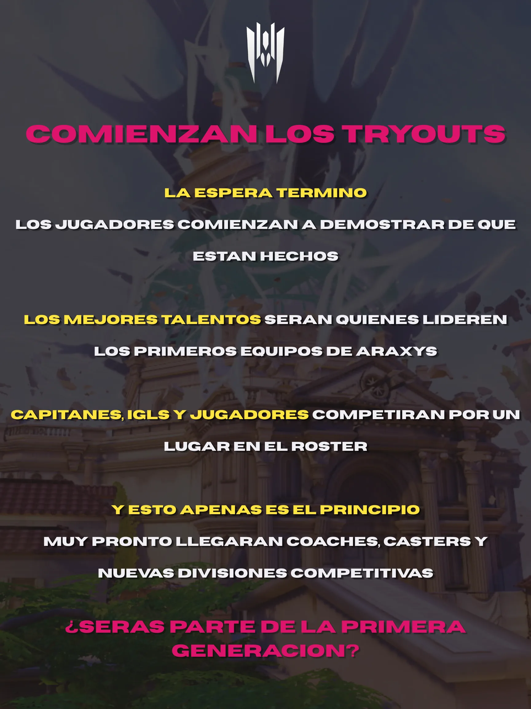

Con el lanzamiento oficial de las postulaciones, Araxys Esports inicia una nueva etapa en la construccion de su comunidad. Jugadores, coaches, casters y creadores de contenido ya pueden unirse al proyecto a traves de la pagina o del servidor oficial de Discord mediante un proceso de inscripcion sencillo y accesible.
El objetivo de esta convocatoria es reunir personas con ganas de competir, aprender y formar parte de una comunidad que continua creciendo. Mas alla de buscar unicamente a los perfiles con mayor experiencia, Araxys apuesta por ofrecer oportunidades a quienes desean mejorar sus habilidades o descubrir por primera vez como es participar en un entorno competitivo.
Aunque las plazas para algunos equipos son limitadas, la organizacion mantiene abiertas diferentes areas donde cualquier persona interesada puede aportar su talento. Actualmente existe una especial necesidad de coaches y casters, dos roles fundamentales para el desarrollo de los equipos y de los futuros torneos que formaran parte del proyecto.
Los creadores de contenido tambien cuentan con un espacio propio dentro de Araxys. Los rosters destinados a streamers buscan reunir a personas con intereses similares para colaborar en transmisiones, organizar actividades, compartir experiencias y crecer junto a otros miembros de la comunidad.
Perfiles que buscamos actualmente
- Jugadores, cuando existan vacantes disponibles.
- Coaches.
- Casters.
- Creadores de contenido.
Las convocatorias se anunciaran de forma oficial a traves del servidor de Discord y de la seccion de noticias destacadas, donde tambien se informara sobre la apertura o cierre de nuevas postulaciones conforme la comunidad continue creciendo.
Con esta convocatoria, Araxys Esports continua dando sus primeros pasos hacia la formacion de una comunidad solida. En las proximas semanas se anunciaran nuevas incorporaciones, actividades y proyectos que marcaran el comienzo de una nueva etapa para todos los miembros de la organizacion.